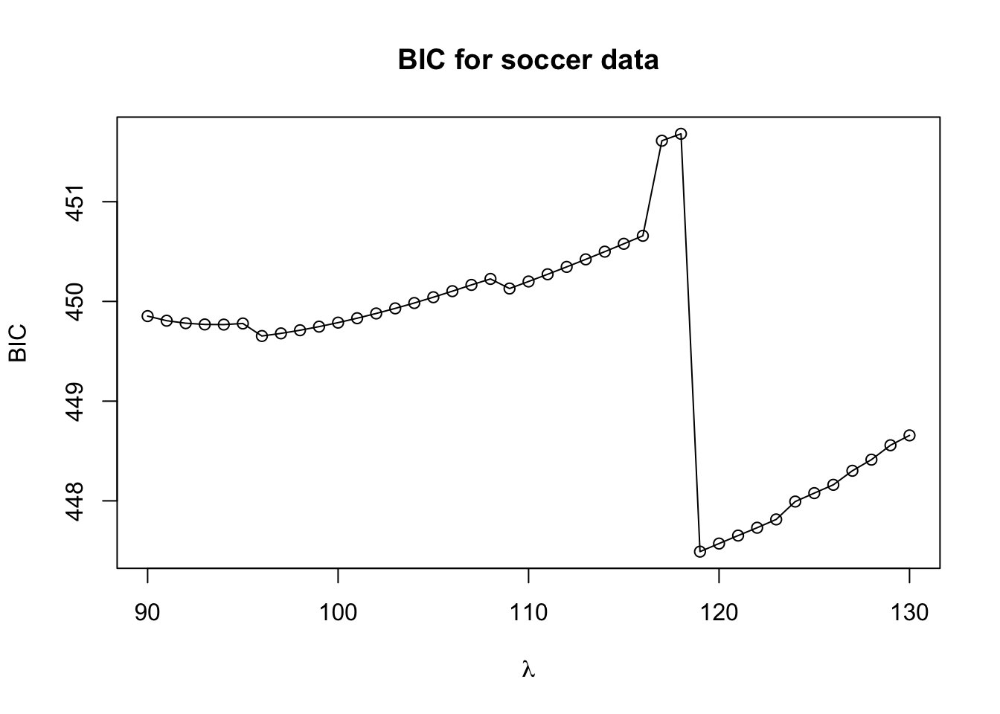

Chapter 4 Sparse Regression for Longitudinal Data
4.1 Sparse regression methods
Sparse regression methods typically involve estimating the regression coefficients by minimizing a penalized least-squares criterion.
The most well-known sparse regression method is the lasso.
With the lasso, the regression coefficients \(\boldsymbol{\beta}\) are found by minimizing the following penalized least-squares criterion: \[\begin{equation} Q_{\lambda}(\boldsymbol{\beta}) = \sum_{i=1}^{n}(y_{i} - \mathbf{x}_{i}^{T}\boldsymbol{\beta})^{2} + \lambda \sum_{j=1}^{p}|\beta_{j}| \end{equation}\]
An advantage of the lasso is that many of the individual estimated regression coefficients \(\hat{\beta}_{j}\) will equal zero exactly.
You can think of the lasso as performing variable selection
- The regression coefficient estimates which are non-zero will be the “selected” variables.
A nice feature of the lasso is that it performs simultaneous variable selection and regression coefficient estimation.
You do not need to first select a model and then estimate the coefficients from this selected model.
The selection and estimation is done at the same time.
\(\lambda \geq 0\) in the \(L_{1}\) penalty function \(\lambda \sum_{j=1}^{p}|\beta_{j}|\) is referred to as the “tuning parameter”.
If \(\lambda\) is large enough, all of the estimated regression coefficients will be equal to zero.
If \(\lambda = 0\), then the estimated regression coefficients will be the same as the usual least-squares estimates.
For intermediate values of \(\lambda\), some regression coefficients will be “selected” with the remaining regression coefficient estimates being set to zero.
The value of the tuning parameter \(\lambda\) is most ofte chosen through cross-validation.
- However, \(\lambda\) is sometimes chosen by looking at an estimate of the “degrees of freedom” associated \(\lambda\).
Lasso paths: You can plot the values of the regression coefficients for different values of \(\lambda\) to get a sense of which variables are selected first.
In addition to performing variable selection, the lasso also shrinks the regression coefficient estimates towards zero.
This can improve predictive performance when the regression coefficient estimates have high variance.
- This can occur, for example, if the matrix \(\mathbf{X}^{T}\mathbf{X}\) is poorly conditioned.
Another advantage of the lasso and other penalized regression methods is that they can be used when the number of variables is greater than the number of observations.
Although the lasso is often suggested as a tool for high-dimensional problems (i.e., lots of covariates), the lasso is still a good tool for moderate-sized number of covariates (e.g., 10-20).
- The lasso can still improve predictive performance in such cases, and the lasso enables simultaneous variable selection and estimation.
4.2 The Lasso with longitudinal data
Recall our notation for longitudinal data with random effects:
\(Y_{ij}\) - outcome for individual \(i\) at time \(t_{ij}\).
\(\mathbf{x}_{ij}\) - vector of covariates for individual \(i\) at time \(t_{ij}\).
\(\mathbf{z}_{ij}\) - vector determining form of random effects for individual \(i\) at time \(t_{ij}\)
- With penalized regression for longitudinal data, the linear mixed model still assumes that
\[\begin{eqnarray}
Y_{ij} &=&
\beta_{0} + \mathbf{x}_{ij}^{T}\boldsymbol{\beta} + b_{ij} + e_{ij} \nonumber \\
&=& \beta_{0} + \mathbf{x}_{ij}^{T}\boldsymbol{\beta} + \mathbf{z}_{ij}^{T}\mathbf{u}_{i} + e_{ij}
\tag{4.1}
\end{eqnarray}\]
- \(\boldsymbol{\beta}\) - vector of fixed effects
- \(\mathbf{u}_{i}\) - vector of random effects
- \(\mathbf{u}_{i} \sim \textrm{Normal}(0, \boldsymbol{\Sigma}_{\boldsymbol{\theta}})\).
- \(e_{ij} \sim \textrm{Normal}(0, \sigma^{2})\).
If \(\mathbf{Y}_{i} = (Y_{i1}, ..., Y_{in_{i}})\) is the vector of observations from the \(i^{th}\) person.
The vectors \(\mathbf{Y}_{1}, \ldots, \mathbf{Y}_{m}\) are independent although the observations within each vector are not independent.
The distribution of \(\mathbf{Y}_{i}\) is \(\mathbf{Y}_{i} \sim \textrm{Normal}\left( \mathbf{X}_{i}\boldsymbol{\beta}, \mathbf{V}_{i}(\boldsymbol{\theta}, \sigma^{2}) \right)\).
- \(\mathbf{X}_{i}\) is the \(n_{i} \times p\) design matrix for individual \(i\).
The covariance matrix of \(\mathbf{Y}_{i}\) is \[\begin{equation} \mathbf{V}_{i}(\boldsymbol{\theta}, \sigma^{2}) = \textrm{Cov}(\mathbf{Y}_{i}) = \mathbf{Z}_{i}\boldsymbol{\Sigma}_{\boldsymbol{\theta}}\mathbf{Z}_{i}^{T} + \sigma^{2}\mathbf{I}_{n_{i}} \end{equation}\]
- \(\mathbf{Z}_{i}\) is the \(n_{i} \times q\) random effects design matrix for individual \(i\).
Let \(\mathbf{Y}\) be the vector of responses stacked in “long form”:
- \(\mathbf{Y} = (Y_{11}, Y_{12}, ...., Y_{mn_{m}})\)
Under the assumed linear mixed model (4.1), we have \[\begin{equation} \mathbf{Y} \sim \textrm{Normal}(\mathbf{X}\boldsymbol{\beta}, \mathbf{V}) \end{equation}\]
The covariance matrix \(\mathbf{V}\) will be “block diagonal” diagonal matrix with the blocks being \(\mathbf{V}_{i}(\theta, \sigma^{2})\) \[\begin{equation} \mathbf{V} = \begin{bmatrix} \mathbf{V}_{1}(\boldsymbol{\theta}, \sigma^{2}) & \mathbf{0} & \mathbf{0} & \ldots & \mathbf{0} \\ \mathbf{0} & \mathbf{V}_{2}(\boldsymbol{\theta}, \sigma^{2}) & \mathbf{0} & \ldots & \mathbf{0} \\ \mathbf{0} & \mathbf{0} & \mathbf{V}_{3}(\boldsymbol{\theta}, \sigma^{2}) & \ldots & \mathbf{0} \\ \vdots & & & \ddots & \vdots \\ \mathbf{0} & \mathbf{0} & \mathbf{0} & \ldots & \mathbf{V}_{m}(\boldsymbol{\theta}, \sigma^{2}) \end{bmatrix} \end{equation}\] —
With the LMM-Lasso (Schelldorfer, Bühlmann, and De Geer (2011)), you estimate the vector of fixed effects \(\boldsymbol{\beta}\) and the parameters in \(\mathbf{V}\) by minimizing the following penalized negative log-likelihood: \[\begin{eqnarray} && Q_{\lambda}(\boldsymbol{\beta}, \boldsymbol{\theta}, \sigma^{2}) = \frac{1}{2}\log\det(\mathbf{V}) + \frac{1}{2}(\mathbf{Y} - \mathbf{X}\boldsymbol{\beta})^{T}\mathbf{V}^{-1} (\mathbf{Y} - \mathbf{X}\boldsymbol{\beta}) + \lambda\sum_{j=1}^{p} |\beta_{j}| \nonumber \\ &=& \frac{1}{2}\sum_{i=1}^{m} \log\det\left( \mathbf{V}_{i}(\boldsymbol{\theta}, \sigma^{2}) \right) + \frac{1}{2}\sum_{i=1}^{m} (\mathbf{Y}_{i} - \mathbf{X}_{i}\boldsymbol{\beta})^{T}\mathbf{V}_{i}^{-1}(\boldsymbol{\theta}, \sigma^{2}) (\mathbf{Y}_{i} - \mathbf{X}_{i}\boldsymbol{\beta}) + \lambda\sum_{j=1}^{p} |\beta_{j}| \nonumber \\ \end{eqnarray}\]
In Schelldorfer, Bühlmann, and De Geer (2011), suggest using a Bayesian information criterion (BIC) to choose the tuning parameter \(\lambda\).
This is defined as \[\begin{equation} \textrm{BIC}_{\lambda} = -2 \times \textrm{log-likelihood} + \log(n) \times df_{\lambda} \end{equation}\]
- \(df_{\lambda}\) is equal to the number of non-zero regression coefficients when using \(\lambda\) plus the number of paramaters in the matrix \(\mathbf{V}_{i}(\boldsymbol{\theta}, \sigma^{2})\).
4.3 Lasso for LMMs and GLMMs in R
One R package which fits linear mixed models and generalized linear mixed models with the Lasso penalty is the glmmLasso package.
There are also methods and R implementations for penalized regression with GEEs. See, for example, the paper: Wang, Zhou, and Qu (2012)
- I won’t cover that today.
4.3.1 Soccer Data
To briefly show how this works, we can use the soccer data from the glmmLasso package.
This is actually not a longitudinal dataset, but it does have repeated measures.
This dataset has 54 observations with 23 unique teams.
Each row in this dataset corresponds to data taken from a single team in a single season.
## [1] 54 16## pos team points transfer.spendings transfer.receits yellow.card
## 338 12 1. FC Koeln 39 5150000 750000 70
## 357 13 1. FC Koeln 38 11500000 900000 70
## 324 16 1. FC Nuernberg 31 5400000 6350000 61
## 360 16 1. FC Nuernberg 31 450000 1900000 53
## 353 9 1. FSV Mainz 05 47 3000000 200000 58
## 333 7 1899 Hoffenheim 55 11950000 125000 70
## yellow.red.card red.card unfair.score ave.unfair.score ball.possession
## 338 2 2 86 2.53 49.02
## 357 1 3 88 2.59 48.23
## 324 3 0 70 2.06 52.02
## 360 2 0 59 1.74 50.41
## 353 1 3 76 2.24 47.76
## 333 3 3 94 2.76 49.64
## tackles capacity total.attend ave.attend sold.out
## 338 49.17 50076 853767 50222 11
## 357 48.94 50076 822102 48359 6
## 324 51.26 48548 742739 43691 2
## 360 49.61 48548 719705 42336 5
## 353 49.44 20300 342350 20138 11
## 333 50.38 30164 477414 28083 17## [1] 23The variable
teamrepresents the soccer team.- Each team has 2 or 3 seasons of data.
The variable
pointsrepresents the total number of points scored over the course of the season.There are a number of other variables that may explain some of the variation in points scored:
ball.possession,tackles, etc.
We will use
pointsand 10 of the other variables as the fixed-effects covariates.It is common in practice to center and scale the covariates before running the lasso:
soccer[,c(4,5,9:16)] <- scale(soccer[,c(4,5,9:16)], center=TRUE, scale=TRUE)
soccer <- data.frame(soccer)- To fit an lmm-lasso with \(\lambda = 100\) and a random intercept for each team, we can use the following code
lm.lambda100 <- glmmLasso(points ~ transfer.spendings + ave.unfair.score
+ ball.possession + tackles
+ ave.attend + sold.out, rnd = list(team=~1),
lambda=100, data = soccer)- Note that the random effects model (i.e., the model for \(b_{ij}\)) is specified through the
rndargument.team = ~1means that \(b_{ij} = u_{i}\) for each \(i,j\).
- To look at the summary of the parameter estimates, use
summary
## Call:
## glmmLasso(fix = points ~ transfer.spendings + ave.unfair.score +
## ball.possession + tackles + ave.attend + sold.out, rnd = list(team = ~1),
## data = soccer, lambda = 100)
##
##
## Fixed Effects:
##
## Coefficients:
## Estimate StdErr z.value p.value
## (Intercept) 46.587693 NA NA NA
## transfer.spendings 2.889109 NA NA NA
## ave.unfair.score -0.090639 NA NA NA
## ball.possession 2.157890 NA NA NA
## tackles 1.643980 NA NA NA
## ave.attend 2.024174 NA NA NA
## sold.out 3.027830 NA NA NA
##
## Random Effects:
##
## StdDev:
## team
## team 0.4805113- All coefficient estimates are non-zero except for the “average unfariness score per match” variable
- If we set \(\lambda = 500\), all of the coefficient estimates will be zero:
lm.lambda500 <- glmmLasso(points ~ transfer.spendings + ave.unfair.score
+ ball.possession + tackles
+ ave.attend + sold.out, rnd = list(team=~1),
lambda=500, data = soccer)
summary(lm.lambda500)## Call:
## glmmLasso(fix = points ~ transfer.spendings + ave.unfair.score +
## ball.possession + tackles + ave.attend + sold.out, rnd = list(team = ~1),
## data = soccer, lambda = 500)
##
##
## Fixed Effects:
##
## Coefficients:
## Estimate StdErr z.value p.value
## (Intercept) 44.321 NA NA NA
## transfer.spendings 0.000 NA NA NA
## ave.unfair.score 0.000 NA NA NA
## ball.possession 0.000 NA NA NA
## tackles 0.000 NA NA NA
## ave.attend 0.000 NA NA NA
## sold.out 0.000 NA NA NA
##
## Random Effects:
##
## StdDev:
## team
## team 11.81332- We can find the value of BIC by looking at the
$biccomponent of lm.lambda100
## [,1]
## [1,] 449.78754.3.2 Choosing the tuning parameter for the soccer data
Because \(\lambda = 500\) implies that all of the coefficient estimates are zero, we know that the “best” value of \(\lambda\) should be somewhere between \(0\) and \(500\).
Let’s compute the BIC across a grid of \(\lambda\) values from \(0\) to \(500\) and plot the result
lam.seq <- seq(0, 500, by=5)
BIC.values <- rep(0, length(lam.seq))
for(k in 1:length(lam.seq)) {
lm.tmp <- glmmLasso(points ~ transfer.spendings + ave.unfair.score
+ ball.possession + tackles
+ ave.attend + sold.out, rnd = list(team=~1),
lambda=lam.seq[k], data = soccer)
BIC.values[k] <- lm.tmp$bic
}
plot(lam.seq, BIC.values, xlab=expression(lambda), ylab="BIC", main="BIC for soccer data")
- It looks like the lowest BIC value is in between 90 and 130.
- Let’s plot the BIC values for a denser grid of \(\lambda\) values between 90 and 130
lam.seq <- seq(90, 130, by=1)
BIC.values <- rep(0, length(lam.seq))
for(k in 1:length(lam.seq)) {
lm.tmp <- glmmLasso(points ~ transfer.spendings + ave.unfair.score
+ ball.possession + tackles
+ ave.attend + sold.out, rnd = list(team=~1),
lambda=lam.seq[k], data = soccer)
BIC.values[k] <- lm.tmp$bic
}
plot(lam.seq, BIC.values, xlab=expression(lambda), ylab="BIC", main="BIC for soccer data")
lines(lam.seq, BIC.values)
- The best value of \(\lambda\) according to the BIC criterion is \(119\):
## [1] 119- Let’s look at the regression coefficient estimates using \(\lambda = 119\)
lm.lambda19 <- glmmLasso(points ~ transfer.spendings + ave.unfair.score
+ ball.possession + tackles
+ ave.attend + sold.out, rnd = list(team=~1),
lambda=119, data = soccer)
summary(lm.lambda19)## Call:
## glmmLasso(fix = points ~ transfer.spendings + ave.unfair.score +
## ball.possession + tackles + ave.attend + sold.out, rnd = list(team = ~1),
## data = soccer, lambda = 119)
##
##
## Fixed Effects:
##
## Coefficients:
## Estimate StdErr z.value p.value
## (Intercept) 46.5882 NA NA NA
## transfer.spendings 2.9058 NA NA NA
## ave.unfair.score 0.0000 NA NA NA
## ball.possession 2.1752 NA NA NA
## tackles 1.6407 NA NA NA
## ave.attend 2.0073 NA NA NA
## sold.out 3.0555 NA NA NA
##
## Random Effects:
##
## StdDev:
## team
## team 0.49644624.4 Cross-Validation for Longitudinal Data
Cross-validation without any longitudinal or repeated-measures structure is pretty straightforward.
For longitudinal data, the type of cross-validation can depend on the prediction goals/context.
In many cases, it makes sense to hold out random individuals (or groups) in each test set.
In other words, each training set would look like the following: \[\begin{equation} \mathcal{T}_{r} = \{ \textrm{ all } (Y_{ij}, \mathbf{x}_{ij}), \textrm{such that } i \in \mathcal{S} \} \end{equation}\] where \(\mathcal{S}\) is a random subset of indeces.
In cases where you are thinking of using your model for forecasting, it may make sense to use an alternative strategy for cross-validation.
In this case, you may want to construct the test sets so that they only contain observations at “future” time points when compared with the training set.
Let’s try doing 5-fold cross-validation with the
soccerdata.To do this, it’s easier to just create a team id variable first
team.labels<-data.frame(team=unique(soccer$team),team.id=as.numeric(unique(soccer$team)))
soccer <- merge(soccer, team.labels, by="team")
head(soccer)## team pos points transfer.spendings transfer.receits yellow.card
## 1 1. FC Koeln 12 39 -0.47350170 -0.6774385 70
## 2 1. FC Koeln 13 38 -0.08019776 -0.6624274 70
## 3 1. FC Nuernberg 16 31 -0.45801729 -0.1170267 61
## 4 1. FC Nuernberg 16 31 -0.76460855 -0.5623539 53
## 5 1. FSV Mainz 05 9 47 -0.60666760 -0.7324789 58
## 6 1899 Hoffenheim 7 55 -0.05232583 -0.7399844 70
## yellow.red.card red.card unfair.score ave.unfair.score ball.possession
## 1 2 2 1.0002188 1.0005114 -0.2847609
## 2 1 3 1.1494227 1.1527733 -0.5154026
## 3 3 0 -0.1934125 -0.1922072 0.5910938
## 4 2 0 -1.0140340 -1.0042709 0.1210518
## 5 1 3 0.2541992 0.2645786 -0.6526198
## 6 3 3 1.5970344 1.5841821 -0.1037509
## tackles capacity total.attend ave.attend sold.out team.id
## 1 -0.5594251 0.1908255 0.52774513 0.52776771 0.9696315 1
## 2 -0.7152112 0.1908255 0.41510241 0.41510371 -0.1303706 1
## 3 0.8561964 0.1027586 0.13278238 0.13280873 -1.0103723 2
## 4 -0.2613995 0.1027586 0.05084294 0.05086578 -0.3503711 2
## 5 -0.3765458 -1.5253268 -1.29153165 -1.29154724 0.9696315 3
## 6 0.2601452 -0.9568110 -0.81106503 -0.81107731 2.2896341 4- Now create each of the 5 test sets.
set.seed(2352)
## first create the indices for the test sets
nfolds <- 5
test.groups <- sample(1:nfolds, size=23, replace=TRUE)
test.groups## [1] 2 5 2 5 4 3 1 4 1 2 3 5 3 1 5 2 1 4 3 2 4 5 4## test.groups == k means that the observation will be in the kth test set
## For such a small dataset, you may want to randomly generate the
## test sets so that they all have the same size.- Now, compute cross-validation estimates of the mean-squared error over a grid of \(\lambda\) values
lam.seq <- seq(80, 200, by=10)
MSE <- matrix(0, nfolds, length(lam.seq))
for(j in 1:length(lam.seq)) {
for(k in 1:nfolds) {
soccer.test <- soccer[test.groups==k,]
soccer.train <- soccer[test.groups!=k,]
tmp.lm <- glmmLasso(points ~ transfer.spendings + ave.unfair.score
+ ball.possession + tackles
+ ave.attend + sold.out, rnd = list(team=~1),
lambda=lam.seq[j], data = soccer.train)
predicted.values <- predict(tmp.lm, newdata=soccer.test)
MSE[k,j] <- mean((predicted.values - soccer.test$points)^2)
}
}
plot(lam.seq, colMeans(MSE), xlab=expression(lambda), ylab="MSE", main="5-fold
cross-validation for the soccer data")
lines(lam.seq, colMeans(MSE))- According to the cross-validation estimates of prediction error, the best value of \(\lambda\) is somewhere between \(150\) and \(200\).
As another example of applying
glmmLassoto longitudinal data, we can use theLongituRFpackage.This has a function called
DataLongGenerator.To generate a longitudinal dataset with 30 individuals and 6 covariates, use the following code:
library(LongituRF)
DF <- DataLongGenerator(n=30, p=6)
sim_long <- data.frame(y=DF$Y, time=DF$time, DF$X, id=DF$id)
sim_long$id <- factor(sim_long$id) # id variables should be factors
# for glmmLasso
head(sim_long)## y time X1 X2 X3 X4 X5
## 1 1.799842 1 -0.05305192 -1.17862404 -0.6402514 1.08949573 1.78153877
## 2 4.889512 2 1.51164592 0.07041142 -0.1110482 0.68765869 0.99507885
## 3 13.116280 3 2.48639472 1.31250596 0.6618778 1.39961688 0.36944962
## 4 15.394771 4 2.58113362 1.55329246 0.6282454 0.91656040 0.05963849
## 5 16.274372 5 2.65570681 2.73986512 1.3471802 0.66421057 -0.19163578
## 6 18.363802 6 2.90758445 3.01181338 1.3152902 0.06486541 -0.29723344
## X6 id
## 1 -4.5727670 1
## 2 -6.8566505 1
## 3 -2.1983103 1
## 4 0.9380251 1
## 5 0.9206991 1
## 6 1.5710471 1## [1] 30- Then, to fit a mixed effects model using
glmmLassowith a random intercept and a random slope for the time variable, you can use the following code.
glmm_fit_sim <- glmmLasso(y ~ time + X1 + X2 + X3 + X4 + X5 + X6,
rnd = list(id=~1+time), lambda=10, data = sim_long)## Warning in est.glmmLasso.RE(fix = fix, rnd = rnd, data = data, lambda = lambda,
## : Random slopes are not standardized back!- The summary output should have estimates of both the random intercept standard deviation and the random slope standard deviation:
## Call:
## glmmLasso(fix = y ~ time + X1 + X2 + X3 + X4 + X5 + X6, rnd = list(id = ~1 +
## time), data = sim_long, lambda = 10)
##
##
## Fixed Effects:
##
## Coefficients:
## Estimate StdErr z.value p.value
## (Intercept) 4.2850628 NA NA NA
## time 0.3659943 NA NA NA
## X1 0.9394721 NA NA NA
## X2 1.0545024 NA NA NA
## X3 0.4744803 NA NA NA
## X4 -0.0045651 NA NA NA
## X5 -1.2023977 NA NA NA
## X6 0.0268859 NA NA NA
##
## Random Effects:
##
## StdDev:
## id id:time
## id 5.9167427 0.9256047
## id:time 0.9256047 0.54671044.5 Penalized Generalized Estimating Equations
- Without any penalization, a generalized estimating equation (GEE) approach to estimating \(\boldsymbol{\beta}\)
works by choosing \(\boldsymbol{\beta}\) to solve the following system of equations
\[\begin{equation}
S_{\alpha}(\boldsymbol{\beta}) = \sum_{i=1}^{m} \mathbf{D}_{i}^{T}\mathbf{V}_{i}^{-1}\left(\mathbf{Y}_{i} - \boldsymbol{\mu}_{i}(\boldsymbol{\beta}) \right) = \mathbf{0}
\end{equation}\]
\(\boldsymbol{\mu}_{i}(\boldsymbol{\beta}) = g^{-1}(\mathbf{X}_{i}\boldsymbol{\beta})\): this is a \(n_{i} \times 1\) vector
\(\mathbf{D}_{i} = \partial \boldsymbol{\mu}_{i}/\partial \boldsymbol{\beta}\): this is a \(n_{i} \times p\) matrix.
- \(\mathbf{V}_{i}\) is the “working” covariance matrix of \(\mathbf{Y}_{i}\) which can depend on the parameter \(\alpha\).
For penalized GEE, we are going to solve the equation \(U_{\alpha,\lambda}(\boldsymbol{\beta}) = \mathbf{0}\), where \(U_{\alpha, \lambda}(\boldsymbol{\beta})\) is defined as \[\begin{equation} U_{\alpha, \lambda}(\boldsymbol{\beta}) = S_{\alpha}(\boldsymbol{\beta}) - \sum_{j=1}^{p} q_{\lambda}(|\beta_{j}|)\textrm{sign}(\beta_{j}) \end{equation}\]
Here, \(q_{\lambda}()\) is some choice of “penalty” function and \(\textrm{sign}(\beta_{j}) = 1\) if \(\beta_{j} > 0\) and \(\textrm{sign}(\beta_{j}) = -1\) if \(\beta_{j} < 0\).
The reason for considering \(\textrm{sign}(\beta_{j})\) is that we are no longer trying to minimize \(U_{\alpha, \lambda}(\boldsymbol{\beta})\), but rather trying to solve \(U_{\alpha,\lambda}(\boldsymbol{\beta}) = \mathbf{0}\).
- You can think of this as setting the derivative of a quasi-penalized log-likelihood to zero and solving it.
There are a number of possible choices for \(q_{\lambda}()\).
Penalized GEE as implemented by the PGEE package uses the derivative of the “SCAD” penalty.
For \(t > 0\), the derivative of the SCAD penalty is defined as \[\begin{equation} q_{\lambda}(t) = \begin{cases} t & \text{ for } t < \lambda \\ \frac{a\lambda - t}{(a - 1)\lambda} & \text{ for } \lambda \leq t < a\lambda \\ 0 & \text{ for } t > a\lambda \end{cases} \end{equation}\]
4.5.1 The PGEE package
- Just to show the basics of how the PGEE package works, we can look at the yeastG1 dataset from the PGEE package
## id y time ABF1 ACE2
## 1 1 0.88 3 -0.09702788 8.3839614
## 2 1 0.32 4 -0.09702788 8.3839614
## 3 1 1.09 12 -0.09702788 8.3839614
## 4 1 0.73 13 -0.09702788 8.3839614
## 5 2 0.66 3 -0.34618104 -0.1418099
## 6 2 -0.05 4 -0.34618104 -0.1418099The response of interest is the continuous measurement
y.There are 96 covariates (besides time). I think these are all just different transcription factors.
These 96 covariates are not time-varying.
- Suppose we want to fit the following marginal mean model
\[\begin{equation}
E(Y_{ij}|\mathbf{x}_{ijk}) = \gamma_{0} + \gamma_{1}t_{ij} + \sum_{k=1}^{96}\beta_{j}x_{ijk}
\end{equation}\]
- Note that \(x_{ijk}\) does not change across values of \(j\).
- To fit the above model with an AR(1) correlation structure and \(\lambda = 0.1\), you can use the following R code
- Let’s look at the values of the first 5 estimated regression coefficients:
## (Intercept) time ABF1 ACE2 ADR1
## 1.879532e-03 1.795182e-02 -1.366213e-02 4.360565e-06 2.988796e-07- The
PGEEfunction does not automatically return exactly zero regression coefficients, but you can set those coefficients whose absolute value is less than some small threshold equal to zero.
## [1] 98## [1] 71- The
PGEEpackage does have a function to select the best value of \(\lambda\) through cross-validation.- However, you do have to provide a range of lambda values for the function to search over.
- By trial and error, you can find
- a small value \(\lambda_{min}\) where most of the coefficients are nonzero.
- a large value \(\lambda_{max}\) where most of the coefficients are zero.
- then, perform cross-validation over the range \((\lambda_{min}, \lambda_{max})\).
- Setting \(\lambda_{min} = 0.01\) and \(\lambda_{max} = 0.3\) seems reasonable.
- This gives a range of 12-92 for the number of zero coefficients
mlow <- PGEE(y ~. -id, id=id, corstr="AR-1", lambda=0.01, data=yeastG1)
mhigh <- PGEE(y ~. -id, id=id, corstr="AR-1", lambda=0.3, data=yeastG1)
sum(abs(mlow$coefficients) < 1e-4) ## only 12 out of 98 are zero
sum(abs(mhigh$coefficients) < 1e-4) ## now, 92 out of 98 are zero- The “Quasi Information Criterion” (QIC) is a model selection tool for GEEs.
This is similar to AIC or BIC in likelihood-based methods.
QIC could potentially be used to compute \(\lambda\).
However, QIC is not implemented by the PGEE package.
QIC is implemented in
geepack. So, if you’re doing model comparison with different covariates ingeepack, you can compare their QIC values.
- Now, let’s use the
CVfitfunction from thePGEEpackage to get the best value of \(\lambda\) over the range \((\lambda_{min}, \lambda_{max})\).- Use 5-fold cross-validation using the
foldargument inCVfit. - Use a lambda sequence of length 10 from 0.01 to 0.3
- Use 5-fold cross-validation using the
The cross-validation done by
CVfitdoes automatically assume an “independent” working correlation structure.The
lam.optcomponent ofcv.yeastgives the optimal value of lambda.
## [1] 0.04222222- Now, we can just use
PGEEwith the optimal value of lambda.
- From the
mfinalobject returned byPGEE, we can look at the selected nonzero coefficients
## (Intercept) time ABF1 ACE2 ARG81
## 0.0654041421 0.0124562882 -0.0325838863 0.0127874415 0.0169445034
## ASH1 CAD1 CIN5 DAL82 DIG1
## -0.0482950685 0.0022875036 0.0197437839 -0.0033708398 0.0064621372
## FKH1 FKH2 FZF1 GAT1 GAT3
## -0.0224616164 -0.0854029778 -0.0141534498 0.0157663787 0.4004159946
## GCN4 GCR1 GCR2 GRF10.Pho2. GTS1
## -0.0072661953 -0.0052707577 -0.0313007398 -0.0149795248 -0.0196408251
## HAL9 HIR1 HIR2 IXR1 LEU3
## 0.0064780824 -0.0067448440 -0.0005240435 -0.0036456617 -0.0002425373
## MATa1 MBP1 MET31 MET4 MSN4
## -0.0019846420 0.1338670401 -0.0058896291 -0.0356033691 0.0090765224
## MTH1 NDD1 NRG1 PHD1 RCS1
## -0.0199223945 -0.1048632039 0.0071845565 0.0244530145 -0.0072457243
## REB1 RFX1 RLM1 RME1 ROX1
## -0.0183030215 0.0024567990 0.0017190724 0.0112334737 0.0099033888
## RTG1 SFP1 SKN7 SMP1 STB1
## 0.0041439296 0.0161008010 0.0194410387 0.0163084797 0.0712247908
## STP1 SWI4 SWI5 SWI6 YAP1
## 0.0402297692 0.0309969037 0.0190456062 0.0376147418 -0.0021417459
## YAP5 YAP6 YJL206C ZAP1
## -0.3194214925 -0.0247157203 0.0014576098 -0.0182930638- We can also look at the estimated working correlation matrix
## [,1] [,2] [,3] [,4]
## [1,] 1.000 0.115 0.013 0.002
## [2,] 0.115 1.000 0.115 0.013
## [3,] 0.013 0.115 1.000 0.115
## [4,] 0.002 0.013 0.115 1.000PGEEalso returns most of the other types of components that functions likelm,glm,geeglmreturn: e.g.,fitted.values,residuals, etc.
4.6 GLMM-Lasso with Binary Outcomes
You can use
glmmLassowith binary outcomes by adding thefamily=binomial()argument.As a quick example, let’s look at the
ohiodata from thegeepackpackage.
## resp id age smoke
## 1 0 0 -2 0
## 2 0 0 -1 0
## 3 0 0 0 0
## 4 0 0 1 0
## 5 0 1 -2 0
## 6 0 1 -1 0- For the
glmmLassofunction, you do need to make sure the “id variable” is a factor.
- Let’s now fit a penalized generalized linear mixed model with \(\lambda = 10\):
ohio.fit10 <- glmmLasso(smoke ~ resp + age, family=binomial(), rnd = list(id=~1),
lambda=10, data = ohio)- It looks like the wheeze status variable was selected while the age variable was not.
## Call:
## glmmLasso(fix = smoke ~ resp + age, rnd = list(id = ~1), data = ohio,
## lambda = 10, family = binomial())
##
##
## Fixed Effects:
##
## Coefficients:
## Estimate StdErr z.value p.value
## (Intercept) -0.67603 NA NA NA
## resp 0.00000 NA NA NA
## age 0.00000 NA NA NA
##
## Random Effects:
##
## StdDev:
## id
## id 0.9496094